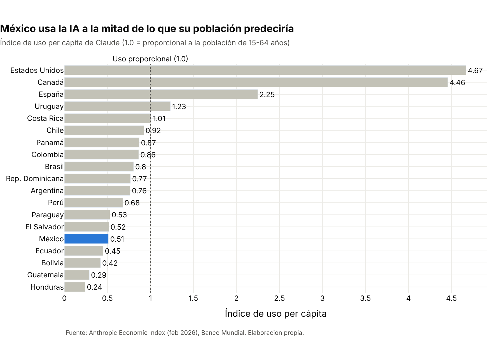
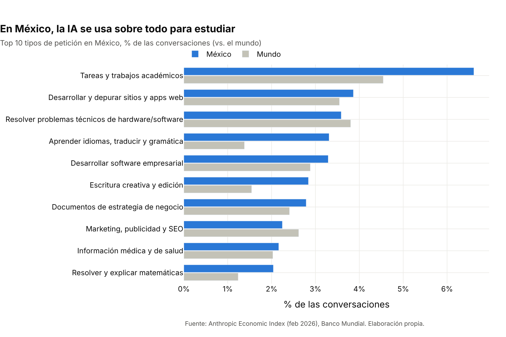
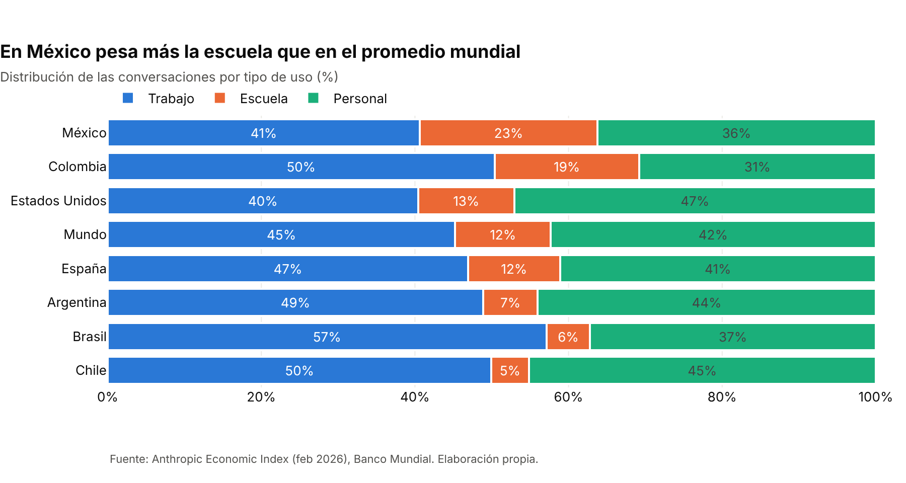
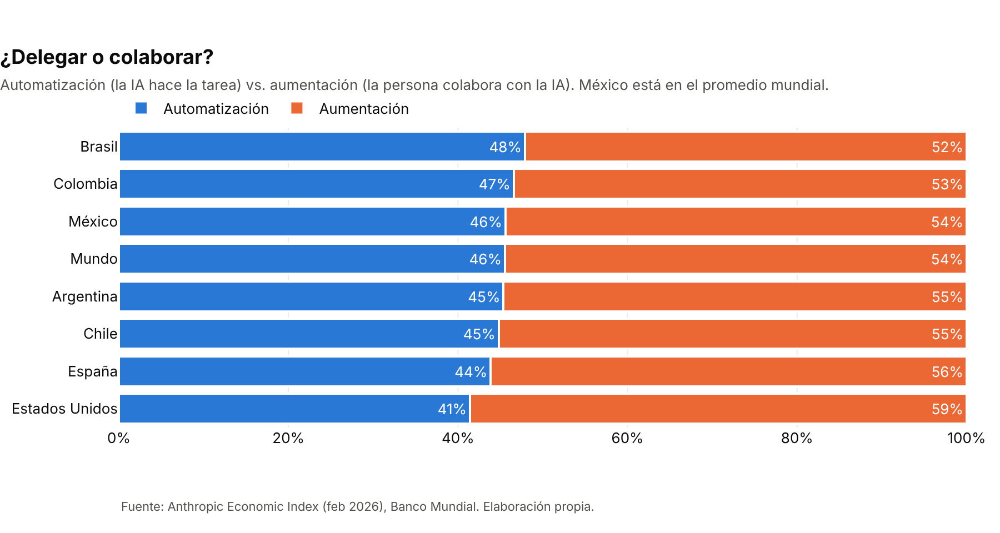

¿Cómo usa México la IA?
Datos del Anthropic Economic Index (febrero 2026) y del Banco Mundial.

México usa la IA a la mitad de lo que su población predeciría, por debajo de Chile, Colombia, Brasil y Argentina.

Las tareas escolares encabezan la lista. También destacan los idiomas y la escritura creativa, muy por encima del promedio mundial.

En México, casi una de cada cuatro conversaciones es de la escuela, el doble del promedio mundial.

Los mexicanos colaboran con la IA (aumentación) un poco más de lo que le delegan tareas completas, igual que el promedio mundial.

Incluso tomando en cuenta su nivel de ingreso, México queda por debajo de la tendencia mundial.